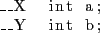

Next: Dedicated register sets Up: DSP-C Previous: Operations on new data Contents Index
DSP-C allows programmers to provide distributed memory views to compilers. Since memories in DSP's can be physically located in different places, providing divided memory view to developer gives them flexibility to decide on memory location for each variable. This is achieved through memory labelling. When a variable is defined, the label on definition tells compiler which memory will hold a particular variable.
Example
In above example, variable  and  may be allocated in different memory regions, which can be in different physical memory. For instance, memory label
may be allocated in different memory regions, which can be in different physical memory. For instance, memory label  will inform compiler that variable will be allocated in memory bank X and will inform that variable will be allocated in memory bank Y.
will inform compiler that variable will be allocated in memory bank X and will inform that variable will be allocated in memory bank Y.